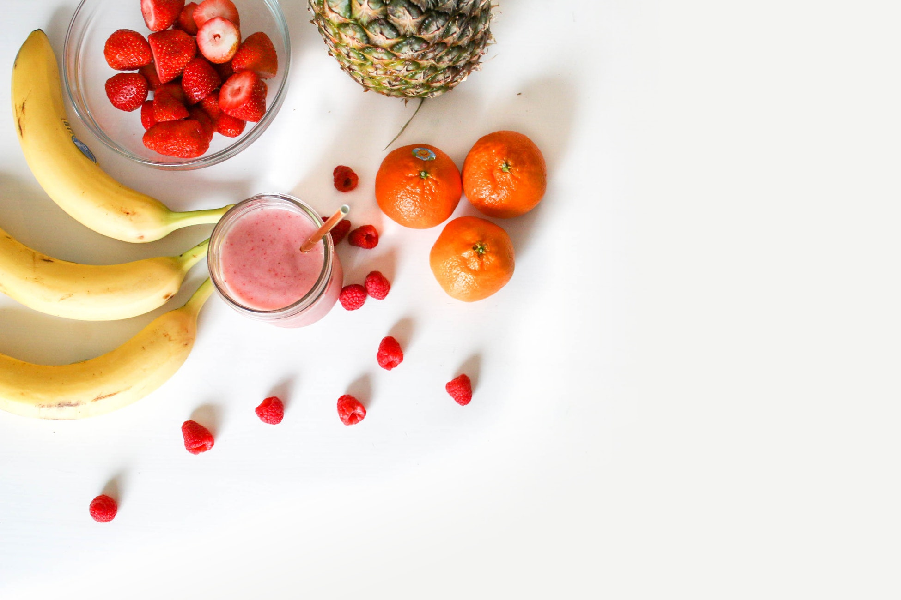

Soco Juice, en quelques mots
C’est à Cagnes sur Mer, pendant une journée de printemps, que commence l’histoire de Soco Juice. Carla flâne au soleil dans son jardin avec ses sœurs Soso et Coco quand une pomme tombe sur sa tête. Après un fou-rire, elles décident de préparer un jus de pomme revisité dans leur cuisine d’été. La recette, qu’elles firent goûter à leurs amis et voisins, deviendra très vite un produit phare avec des ingrédients inédits dont elles garderont à tout jamais le secret. Ce jus sera le début d’une longue histoire et Soco Juice propose aujourd’hui une multitude de recettes pour satisfaire les infinies préférences gustatives et les besoins de ses clients. Des ingrédients naturels, un packaging épuré mais surtout beaucoup d’amour vous attendent dans l’univers de Soco Juice … Alors n’attendez plus !


Les jus qu'il vous manquait !
Soco Juice vous propose un large éventail de jus et smoothies frais et naturels à tout petits prix. Perdre du poids, gagner en énergie, purifier votre organisme ou encore mieux dormir, les Jus et Smoothies Soco Juice vous aideront à réaliser vos objectifs tout en vous assurant une expérience gourmande, pleine de fraicheur et de légèreté. Récoltés dans une démarche écologique, les fruits et les légumes des boissons Soco Juice sont issus d’une agriculture durable, respectueuse de la planète. Soco Juice vous propose également une expérience unique et personnalisée en vous donnant l’opportunité de créer vos propres boissons pour répondre au plus près de vos besoins.
Et en plus, c'est fait maison!
Chez Soco Juice, nous sommes convaincus que nous ne devons pas seulement offrir du plaisir à nos parties prenantes mais une vraie opportunité de créer des relations durables entre elles, basées sur le partage, l’intégrité et l’inclusion. C’est ainsi que La #SocoTeam est née, une communauté qui rassemble la grande majorité de nos consommateurs mais également nos collaborateurs et nos fournisseurs. Partage d’expériences, évènements, idées recettes, avis et bien plus encore vous attendent ! Ne tardez plus, rejoignez la #SocoTeam !